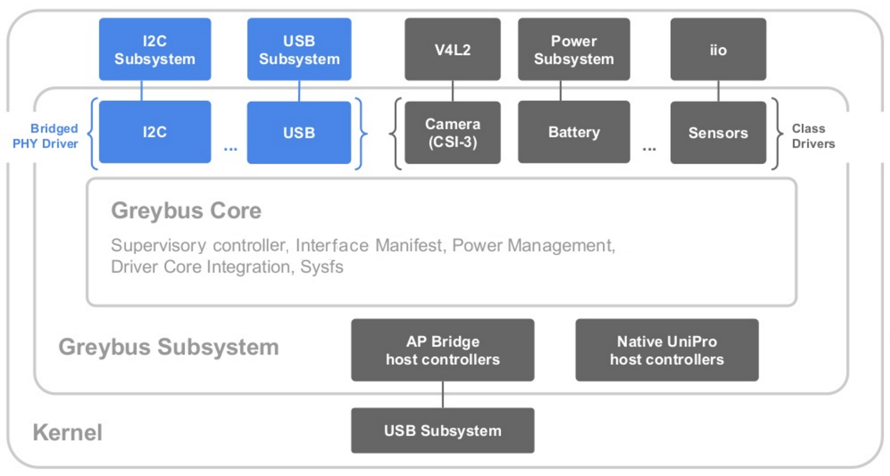
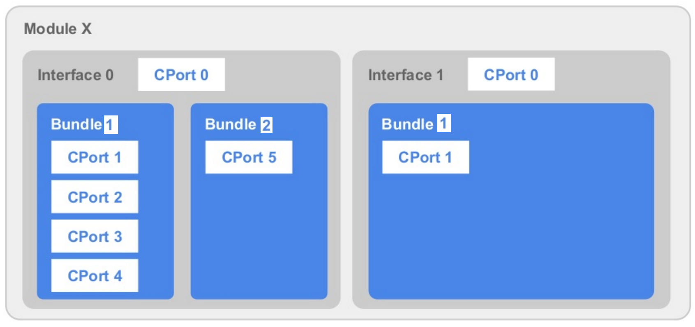

The Linux kernel gained a new subsystem during the 4.9 release, Greybus and this article will briefly take you through the internals of it.
Greybus was initially designed for Google’s Project ARA smartphone (which is discontinued now), but the first (and only) product released with it is Motorola’s Moto Mods. There are also discussions going on to evaluate the feasibility of using the robust protocols provided by Greybus in non-Unipro applications like IoT, and other parts of the kernel that need to communicate in a platform independent way.
Initially, Greg Kroah-Hartman tried to merge Greybus core in the drivers directory directly (drivers/greybus), but after some objection (people wanted to do more detailed reviews before merging it) everyone agreed to merge it in the staging tree (drivers/staging/greybus). Almost 2400 patches, developed over 2.5 years, got merged with contributions from 50+ developers from at least 5 organizations (Google, Linaro, BayLibre, LeafLabs, MMSolutions). There were a lot more developers and companies involved for developing other parts of the ARA software and hardware. Greybus developers also showed in the list of most active developers (Top four by changesets) for the 4.9 release.
Greg made sure Greybus gets merged with all its history preserved and he said:
"Because this was 2 1/2 years of work, with many many developers
contributing, I didn't want to flatten all of their effort into a few
small patches, as that wouldn't be very fair. So I've built a git tree
with all of the changes going back to the first commit, and merged it
into the kernel tree, just like btrfs was merged into the kernel."Jonathan Corbet wrote an article earlier on Greybus. The readers may want to look at that to catchup on some history.
The Project ARA smartphone was designed to be customizable. The user can select a subset of physical modules from a wide range of modules, providing interesting capabilities (like cameras, speakers, batteries, displays, sensors, etc), and attach them to the frame of the phone. The modules can communicate with the main processors or other modules directly over the UniPro bus.
The specifications of the UniPro bus are defined by the MIPI alliance. UniPro follows the architecture of the classical OSI network model, except that it has no application layer defined. And that’s where Greybus fits in. Project Ara developers defined their own application layer for Unipro and that is known as Greybus.
UniPro communication happens over bidirectional connections between entities, like the Modules on the ARA smartphone; it doesn’t need to go through the processors. Each UniPro device has virtual ports within it, which can be seen as sub-addresses within the device. They are a lot like sockets and are called as Connection Ports (CPort). There is a switch on the bus that sets up the actual routes. Messages can pass at a rate of around 10Gb/s; the bus also has message prioritization, error handling, and notification of delivery problems, thought Unipro doesn’t support streams or multicast delivery.
As the Greybus specification was initially written for the Project ARA smartphone, it is greatly inspired by ARA’s design, where modules can be inserted into or removed from the phone’s frame on the fly. A lot of efforts have been put to make the specification as generic as possible, in order to make it fit for other use cases as well. You will also notice a lot of similarities with the USB Bus framework in Linux kernel, as it was taken as a reference during the development of Greybus.
Greybus specification provides:
Device discovery and description at runtime.
Network routing and housekeeping.
Class and Bridged PHY protocols, which devices use to talk to each other, and the processors.
The following figure gives a glimpse of how various parts of the kernel interact with the Greybus Subsystem.

Figure 1. The Greybus Subsystem
The Greybus Core at the center of the figure is the soul of the Greybus subsystem.
The Application Processor (AP) represents the group of processors which run the host operating system, Linux in our case.
The Greybus Core implements the SVC protocol (described later), which is used by the Application Processor (AP) to communicate to the Supervisory Controller (SVC). The SVC represents an entity within the Greybus network which configures and controls the Greybus (UniPro) network, mostly based on the instructions from the AP. All module insertion and removal events are first reported to the SVC, which in turn informs the AP about them using the SVC protocol. The AP is responsible for administrating the Greybus network via the SVC.
During initial development of the ARA smartphone, there were no SoCs available with inbuilt UniPro support. Separate hardware entities were designed to connect the AP to the Unipro network. These entities receive a message from AP (non-UniPro), translate and send that to the UniPro network. The same was also required in the other direction, i.e. Receive messages from UniPro and translate them to the AP. These entities are called as AP Bridge host controllers (APB). They can receive messages over USB and send them over UniPro and vice versa. The AP isn’t part of the Greybus network really and so isn’t represented in the above picture. The APB is connected to one side of the USB subsystem and the AP is on the other side of it. The Greybus subsystem also supports SoCs with inbuilt UniPro support and they are represented by Native UniPro host controller. The AP can talk directly to them without the USB subsystem.
During module initialization (after the module is detected on Greybus), the Greybus Core parses Module’s Manifest (which describe the capabilities of the modules, described later) and create devices within the kernel to represent them.
Power management of the whole UniPro network (i.e. AP, SVC and modules) is managed by the Greybus Core. During system suspend, the Greybus core puts the SVC and the modules to low power states and on system resume it brings up the Greybus network. The Greybus Core also performs runtime PM for all individual entities. For example, if a module isn’t getting used currently, the Greybus core will power it off and will bring it back only when it is required to be used.
The Greybus Core also binds itself to the Linux kernel driver core and provides a sysfs interface at /sys/bus/greybus. Following depicts the sysfs hierarchy for a single AP Bridge (APB) connected to the AP. A single Module is accessible via the APB and the module presents a single Interface which contains two Bundles within it. The figure also represents the Control CPort per interface and the SVC per APB, along with a list of attributes for each entity. All of these entities will be described later in detail.
|
The functionality provided by the modules is exposed using Device class and Bridged PHY drivers. The Device class drivers implement protocols whose purpose is to provide a device abstraction for the functionality commonly found on the mobile handsets. For example camera, battery, sensors, etc. The Bridged PHY drivers implement protocols whose purpose is to support communication with the modules on the Greybus network which do not comply with an Device class protocol, and which include integrated circuits using alternative physical interfaces to UniPro. For example GPIO, I2C, SPI, USB, etc. The modules which only implement Device class protocols are said to be device class conformant. Modules which implement any of the Bridged PHY protocols are said to be non-device class conformant. The Device class and Bridged PHY protocols will be listed later.
A Module is the physical hardware entity that can be connected or disconnected statically (before powering ON the system) or dynamically (while the system is running) from the Greybus network. Once the modules are connected to the Greybus network, the AP and the SVC enumerate the modules and fetch per interface manifest to learn about their capabilities.
The following figure gives a glimpse of how the module hierarchy looks like in the Greybus subsystem.

Figure 2. Module hierarchy
Modules are represented within the Linux kernel by the struct gb_module.
|
Here, dev is the module’s device structure, module_id is a unique 8 bit number assigned to the module by the SVC, interfaces are the Interfaces present within the module and num_interfaces is their count.
The Greybus modules have electrical connectors on them, which connect them to the phone’s frame. These electrical connectors are called as Interface Blocks and are represented in software by the term Interface. A module can have one or more Interfaces. The Interface with a smaller interface ID is configured as the primary interface and all other are called as secondary interfaces. The module_id is set to the ID of the primary interface. The primary interface is special as the AP receives module insertion event with the ID of the primary interface and the module can be ejected from the frame only using the primary interface. The interfaces can present any number of functionalities (like: camera, audio, battery, etc), which can be supported with the bandwidth available to the respective Interface block. The interfaces are represented within the Linux kernel by the struct gb_interface.
|
Here, dev is the interface’s device structure, control represents the Control connection (described later), bundles is the list containing bundles within the interface, manifest_descs is the lists of descriptors created from the interface manifest, interface_id is the unique ID of the interface, and module is the pointer to the parent module structure. Both module ID and interface ID start from 0 and are unique within the Greybus network.
The Greybus Interfaces can contain one or more bundles. Each bundle represents a logical greybus device in the kernel. For example, an Interface with vibrator and battery functionalities will have two bundles. One bundle for the vibrator and one bundle for the battery functionality. Each bundle will get a struct device for itself and a greybus driver will bind to that device. The bundle ID is unique within an Interface and it starts from 1; 0 is reserved. The bundles are represented within the Linux kernel by the struct gb_bundle.
|
Here, dev is the bundle’s device structure, intf is the pointer to the parent interface, id is the unique ID of the bundle within the interface, class is the Class type of the bundle (like, camera or audio), connections is the connections within the bundle and num_cports is the count of the connections.
The Greybus driver is represented by the following structure and it accepts the bundle structure as argument to all its callbacks.
|
Here, name is the name of the Greybus driver, probe and disconnect are the callbacks, id_table is the device bundle id table and driver is the generic device driver structure.
The Greybus or UniPro connection is a bidirectional communication path between two CPorts. There can be one or more CPorts within a bundle. The communication over the connections is governed by a predefined set of operations and the semantics of those operations is defined by Greybus Protocols (covered later). Each CPort is managed by exactly one protocol. The CPort numbers are unique within an interface. The first CPort within the interface is always the control CPort0 (not part of any bundle) and rest of the CPorts are numbered starting 1 and should be part of a bundle. CPort0 of an interface is special and is used for the management of the Interface. CPort0 of an interface is governed by a special protocol, Control Protocol (described later). The connections are represented within Linux kernel by the struct gb_connection.
|
Here, hd represents the AP bridge through which the AP is communicating to the module, intf represents the parent interface, bundle represents the parent bundle, hd_cport_id represents the CPort ID of the AP bridge, intf_cport_id represents the CPort ID of the interface, and operations is the list of operations which are getting exchanged over the connection. The connection is established between hd_cport_id and intf_cport_id.
The Greybus bundles can also represent complex functionalities, like audio or camera. Normally such complex devices consist of multiple components working together, like sensors, DMA, bridge, DAIs, codecs, etc., and a single bundle device may look insufficient to represent them. But that’s how Greybus represents such devices. The module side contains the real firmware which makes all these components work together and the module firmware takes inputs from the AP over the connections present within the bundle. For example, a bundle representing the camera will have two connections: data and management. All management instructions are sent to the module or configurations are received from the module using the management connection. And the data from the camera on the module is received over the data connection. The internals of how various components work together to represent the camera are hidden from Greybus and hence the AP.
When a module and its interfaces are connected to the Greybus network (by attaching the module to the frame of the phone), the AP starts enumerating its interfaces over the CPort0. The AP fetches a block of data from the interfaces, called as the Interface Manifest. The manifest is a data structure, which contains manifest header along with a set of descriptors. The manifest allows the AP to learn about the capabilities of the interface.
Following is a simple example of a raw manifest file, that represents an interface which supports a single Audio bundle. The manifest file is then converted into a binary blob using the Manifesto library. In the following example, the bundle has two connection: Management and Data. Note that it is optional to add the control CPort0 in the manifest file.
|
Greybus communication is built on UniPro messages, which are used to exchange information between the AP, SVC, and the modules. Normally all communication is bidirectional, i.e. For every request message from sender, the receiver responds with a response message. Which entity (AP, SVC or the Module) can initiate a request message depends on the individual operation as defined by the respective protocol. For example, only the AP can initiate operations on the Control protocol. Some of the operations are Unidirectional operations as well, where the receiver doesn’t need to respond back with a response message.
Each message sent over UniPro begins with a short header, and is followed by an operation specific payload data. The message header is represented by following structure:
|
Here, size is the size of the header (8 bytes) plus size of the payload data. The size of payload data is defined by each operation of every protocol.
The operation_id is a unique 16 bit number which is used to match request and response messages. The operation_id allows many operations to be "in flight" on a connection at once. The special ID 0 is reserved for unidirectional operations.
The operation type is an 8 bit number that defines the type of the operation. The meaning of the type value depends on the protocol in use on the connection carrying the message. Only 127 operations are available for a given Protocol 0x01..0x7f; Operation 0x00 is reserved. The most significant bit (0x80) of an operation type is used as a flag that distinguishes a request message from its response. For requests, this bit is 0, for responses, it is 1.
The result field is ignored for the request messages and it contains the result of the requested operation in the response message.
The Greybus messages (both request and response) are managed using the following structure within the Linux kernel:
|
Here, operation is the operation to which the message belongs, header is the header to be sent over unipro, payload is the payload to be sent following the header and payload_size is the size of the payload.
The entire Greybus Operation (request + response) is managed using the following structure within the Linux kernel:
|
Here, connection represents the communication path over which Unipro messages are sent, request and response represent the Greybus messages, and type and id are as described earlier in the message header.
There are multiple helpers which can be used to send/receive Greybus messages over a connection, but most of the users end up using following:
|
Here, connection represents the communication path over which Unipro messages are sent, type is the operation type, request is the request payload, request_size is the size of the request payload, response is the space for response payload, response_size is the size of the expected response payload, and timeout is the timeout period for the operation in milliseconds. Mostly a timeout of 1 millisecond is chosen.
gb_operation_sync_timeout() first creates the operation and its messages, copies the request payload into the request message, and then sends the request message header and its payload over the Greybus connection. It then waits for "timeout" milliseconds for a response from the other side and errors out if no response is received within that time. Otherwise, once the response is received, it first checks the response header to check the result of the operation. If result field indicates an error, then gb_operation_sync_timeout() errors out. Otherwise it copies the response payload in the memory pointed by the "response" field and then destroys the operation and message structures. It returns 0 on success or a negative number to represent errors.
The Greybus Protocols define the layout and semantics of the Greybus messages, which may be exchanged over a Greybus connection. Each Greybus protocol defines a set of operations, with formats of their request and response messages. It also states, which side of the connection can initiate the request, i.e. The AP, the module or the SVC. The Greybus protocols are broadly divided into three categories: Special protocols, Device class protocols and Bridged PHY protocols.
The Special protocols are the core Greybus protocols with administrating powers over the Greybus network. There are two special protocols: SVC and Control.
The SVC protocol serves the purpose of communication between the AP and the SVC. The AP controls the network via the SVC using this protocol. The CPort0 of the APB is used for the SVC connection (Don’t confuse that with the CPort0 of each module interface which is used for control protocol). The main purpose of this protocol is to help the AP create routes between various CPorts, sense module insertion or removal, etc. The modules on the Greybus network should not implement it. Some of the operations allowed under this protocol are: Module inserted/removed events, Create/destroy route, Create/destroy connection, Interface eject, Interface activate, Interface resume, etc.
The Control protocol serves the purpose of communication between the AP and the module’s interfaces. The AP controls individual interfaces using this protocol. The main purpose of this protocol is to help the AP enumerate a new interface and learn about its capabilities. Only the AP can initiate operations (send requests) under this protocol and the module needs to responds to those requests. Some of the operations allowed under this protocol are: Get interface manifest, Bundle suspend/resume/activate/deactivate, Get bundle version, etc.
As mentioned earlier, the Device Class protocols provide a device abstraction for the functionality commonly found on mobile handsets. A simple example of that can be the audio management protocol or the camera management protocol. Following are various types of such protocols implemented in the Linux kernel Greybus subsystem: Audio Management Protocol, Camera Management Protocol, Firmware Management Protocol, Firmware Download Protocol, Component Authentication Protocol, HID Protocol, Lights Protocol, Log Protocol, Power Supply Protocol, Loopback Protocol, Raw Protocol, and Vibrator Protocol.
The Bridged PHY protocols provide communication with the modules on the Greybus network which do not comply with an existing device class Protocol, and which include integrated circuits using alternative physical interfaces to UniPro. Following are various types of such protocols implemented in the Linux kernel Greybus subsystem: USB Protocol, GPIO Protocol, SPI Protocol, SDIO Protocol, UART Protocol, PWM Protocol, and I2C Protocol.
The individual protocols aren’t described in great detail here to keep this article short.
Thanks to Jonathan Corbet for his help in reviewing this article.
Last updated 2017-02-08 17:10:59 IST